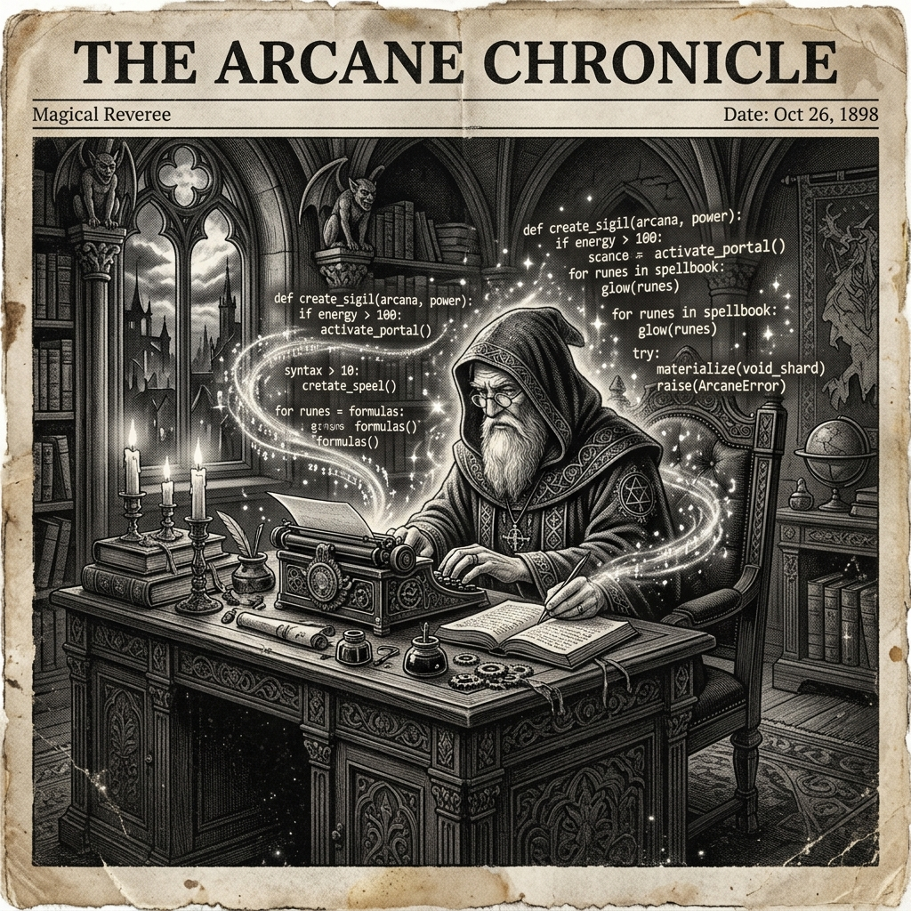

Morning Edition
6:00 AM CSTWorld & Markets
S&P 500 and Nasdaq Close at Fresh Records Despite Iran Tensions
U.S. stocks surged to all-time highs on Wednesday as traders shrugged off geopolitical concerns. The S&P 500 and Nasdaq Composite both set new closing records, with investors focused on strong earnings and the Trump administration's economic policy talks. Taiwan Semiconductor readies its quarterly report amid the rally.
— Source: CNBC, Investor's Business Daily, April 16, 2026NASA's Artemis Mission Pits SpaceX Against Blue Origin in Lunar Race
Following a successful Artemis milestone, NASA is now gearing up for the next phase—one that will see SpaceX and Blue Origin compete head-to-head to land astronauts on the Moon. Both companies' lunar lander designs are in focus as the space agency finalizes mission architecture.
— Source: Scientific American, Reuters, April 14-16, 2026Finance & Crypto
Bitcoin Surges Past $75,000 as XRP, Ethereum, and Solana Rally
Bitcoin has crossed the $75,000 mark in a broad crypto rally that has lifted XRP, Ethereum, and Solana alongside it. The surge comes amid renewed institutional interest and speculation that the crypto bull run may be entering a new phase—though Iran-related uncertainty caused a brief pullback earlier in the week.
— Source: Yahoo Finance, Barron's, April 14-16, 2026J.P. Morgan Highlights Global Dealmaking Trends to Watch
J.P. Morgan released its latest analysis on global M&A activity, pointing to shifting deal landscapes as private equity firms adapt to higher-for-longer interest rates and a new regulatory environment. Cross-border deals in tech and energy remain the brightest spots.
— Source: J.P. Morgan, April 16, 2026
The Thursday Enchanter: Conjuring Code from the Aether.
"Sagittarius, Thursday opens like a clean terminal—blank, powerful, full of possibility. The stars are aligned for collaboration and unexpected help. For a Rat-born Archer, this is the day someone else debugs your code while you ship features. Accept the gifts the universe drops in your lap. Merge fearlessly."— Thursday's Developer Chronicle
Sagittarius Horoscope
Happy Thursday, Archer! Today is bound to be a wonderful day—you're looking and feeling great, and it shows. This is a day of kindness and cooperation. You could find that people pitch in to help without being asked. For a Rat-born Sagittarius, this is your power move: your natural resourcefulness meets cosmic goodwill. In code terms, today's a green CI pipeline—everything compiles, tests pass, and deploys clean. Lean into the harmony. A conversation today could open a door you didn't know existed. Lucky numbers: 4, 16, 28. Lucky color: Midnight Gold. ✨
— Source: Horoscope.com, April 16, 2026Tech & AI Highlights
-
OpenAI and Google Go Big at IPL 2026
AI's biggest brands are turning India's cricket Premier League from a visibility play into a product battleground, with OpenAI and Google both launching major sponsorship campaigns targeting South Asia's massive developer audience.
-
AI Trading Bots Enter the Crypto Mainstream
MoneyFlare has launched a fully automated AI trading bot for crypto markets, signaling that institutional-grade AI trading tools are now accessible to retail investors—and raising questions about market dynamics.
-
SpaceX vs. Blue Origin: The Moon Race Heats Up
With NASA's Artemis program hitting key milestones, the competition between SpaceX's Starship and Blue Origin's Blue Moon lander is intensifying. The next crewed lunar landing could reshape the commercial space industry.
Markets Snapshot
- S&P 500: Record Close (+gains)
- Nasdaq: Record Close (+gains)
- Bitcoin: $75,000+
- XRP, ETH, SOL: All surging
- Gold: Elevated on geopolitical hedging
Active Reminders
- Build Oomi iOS and Android app
- Plaid Integration Research
- Connect Nemu to Notion
- Research VPN/proxy services
- Create security OpenClaw bot